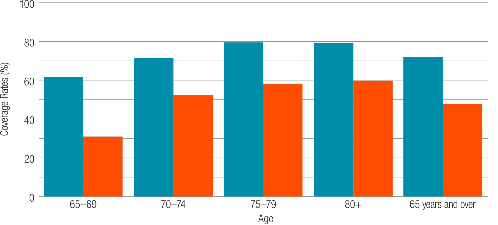
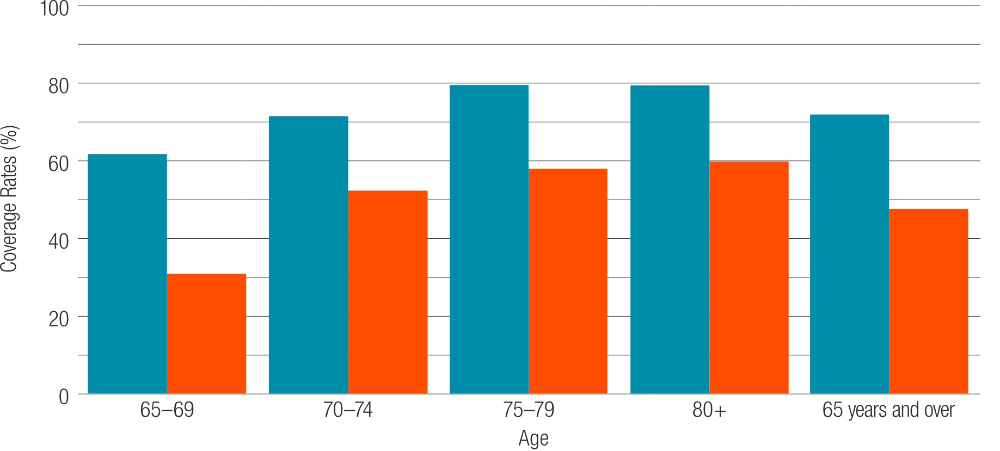

ADULT PNEUMOCOCCAL VACCINATION.
Pneumococcal and influenza disease immunisation by age, NSW 2014–2015
Adapted from http://www.healthstats.nsw.gov.au/Indicator/com_flupneumoimmu_age/com_flupneumoimmu_age_snap
INFLUENZAPNEUMOCOCCAL
Pneumococcal and influenza disease immunisation by age, NSW 2014–2015
Adapted from http://www.healthstats.nsw.gov.au/Indicator/com_flupneumoimmu_age/com_flupneumoimmu_age_snap
INFLUENZA